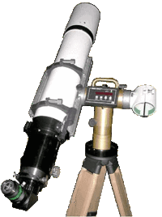
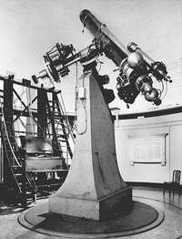

Mount Simulator
mountSim is a Python program that connects to a TeenAstro through Wifi and displays a simulated mount. It reads the steps on both axes, and shows the mount's movements, including Meridian Flip (for German Equatorials only) which can help debugging eventual firmware problems.
Installation
Download the python scripts and STL files from Github. Install Python 3.8 or higher, and the following modules:
pip install argparse numpy trimesh glooey pyglet threading serial serial.tools time datetime
Launch mountSim from the command line. The single option is the IP address of your TeenAstro.
python mountSim.py --ip 192.168.0.21
A graphic window opens, that displays a simplified mount model, selected according to your type of mount:∑
| torial (GEM) |
You can now move the mount with the hand controller. It is also possible to control TeenAstro remotely, either with the Web interface from the SHC, or through a program running on your PC (Ekos, SkySafari etc.).
Note that you can have only one Wifi (IP) port at a time, so the PC program should use USB, not Wifi.
You can run mountSim in parallel with your mount, or without. In this case it is possible to speed up the maximum speed up to 2000x or more. (You may need to lower the gear reduction).
Use these mouse movements: left-click+drag to change the view orientation, middle-click+drag to pan around.
Program Design
The program consists of 2 python scripts (mountSim.py and teenastro.py) and STL files that represent the parts of each mount. I used the 3d parametric CAD tool SolveSpace to design the mounts. The display itself is done by the trimesh library and a pyglet viewer.
Primer on Mount Design
To point any direction in the sky, a telescope mount requires (at least) 2 orthogonal axes. In practice these two types exist:
- Alt-Az: Primary axis is vertical, secondary axis is horizontal.
- Equatorial: Primary axis points to celestial pole, secondary axis sweeps along a meridian.
Within these two main types, there are several design options:
- Fork: Optical tube is in the same plane as the primary axis.
- Offset: Optical tube is offset to the side of the primary axis. Usually requires a counterweight.
Therefore TeenAstro can be configured for any of these 4 types of mounts:
| Fork | Offset | |
|---|---|---|
| Alt-Az | Alt-Az Fork |
 Alt-Az T-Mount |
| Equatorial | Equatorial Fork |
 German Equatorial (GEM) |
Note that some systems do not fit in any of these categories. For example a Dobson telescope on an equatorial table actually has 3 axes: The primary is a kind of horseshoe (equatorial fork), on which an Alt-Az fork is sitting, but not horizontal. But it works!
Also note these interesting cases:
- at the North or South pole, an Alt-Az mount is also an equatorial
- at the equator, the primary axis of an equatorial mount is horizontal
Advantages of each type
Equatorial vs Alt-Az
Equatorial mounts follow the sky with only one motor on the right ascension (hour) primary axis. The object always stays in the same orientation, there is no field rotation. In contrast, Alt-Az mounts need two motors to track, and the field rotates during tracking, requiring a derotator to make images.
Alt-Az mounts are mechanically simpler and lighter. The last large equatorial mount was the 200-inch (5.1m) Hale at Mount Palomar (1949). Modern large telescopes are all Alt-Az.
Fork vs. Offset tube
Equatorial forks are generally bulky and reserved for large instruments. Alt-Az forks are common for amateur telescopes (especially for Schmidt-Cassegrain with short fat tubes). Most amateur telescopes intended for astrophoto are GEM mounts.
What it means for the mount firmware
The main task of a modern GOTO mount firmware is the computation of axis positions from the object's sky coordinates. For Alt-Az, the axis positions are the required altitude and azimuth. For Equatorial, the axis positions are the Hour Angle (Local sidereal time - Right Ascension of object) and the object's declination (with a positive or negative sign, depending on the RA axis position)
In both cases the computation is the same for fork or offset mounts, but the limits are different. For example, a GEM (German Equatorial) cannot track continuously across the southern sky. It needs to perform a meridian flip. Equatorial Fork mounts usually cannot track below the pole.